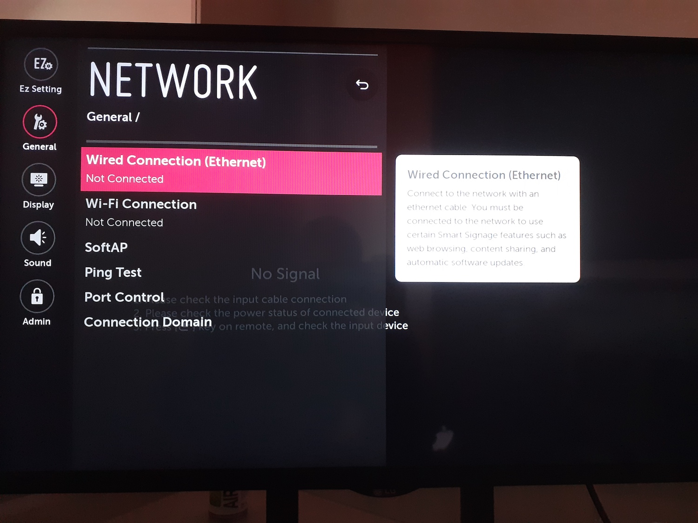

Choisir le menu Démarrage rapide

Choisir votre langue.
Laisser les 2 types de rotations d'écran sur OFF.
IMPORTANT: Réglez l'écran à la bonne heure.
Appuyer sur la touche SETTINGS, et aller dans le menu GENERAL, puis RESEAU

Choisir le type de connection à paramétrer(en RJ45 ou en WIFI)
RJ45
Si vous n'êtes pas sur un réseau avec IP fixes, vous serez connectés automatiquement en branchant votre câble.
Sinon, renseigner les données réseaux indiqués par vore siège ou votre prestataire de service internet.
WIFI: choisir le réseau voulu et rentrer son mot de passe
Appuyez sur la touche SETTING, aller dans EZ SETTINGS, puis SI SERVER SETTING

Choisir SI SERVER SETTING

Ajuster les paramètres suivants
- Nom de domaine qualifié = ON.
- Entrer cette URL http://webos.deepidoo.com/dj/ipk
Merci de bien vérifier que l'url est correcte
- Application Launch Mode = LOCAL
- Application Type = IPK

Cliquer sur DISTANT, puis confimer
Redémarrer votre écran avec votre télécommande
Appuyer sur HOME button, trouver l'icone DJ et appuyer sur OK
Un code à 4 chiffres vous sera demandé. Renseigner le code donné par Deepidoo et valider SEULEMENT si l'adrese indiquée est celle de votre site

L'adresse de votre site est indiquée. Confirmer en appuyant sur la touche 0, SEULEMENT si l'adresse est correcte. Dans le cas contraire, appelez Deepidoo. NOTE: Si besoin, vous pouvez redémarrer cette étape en appuyant sur le bouton STOP.